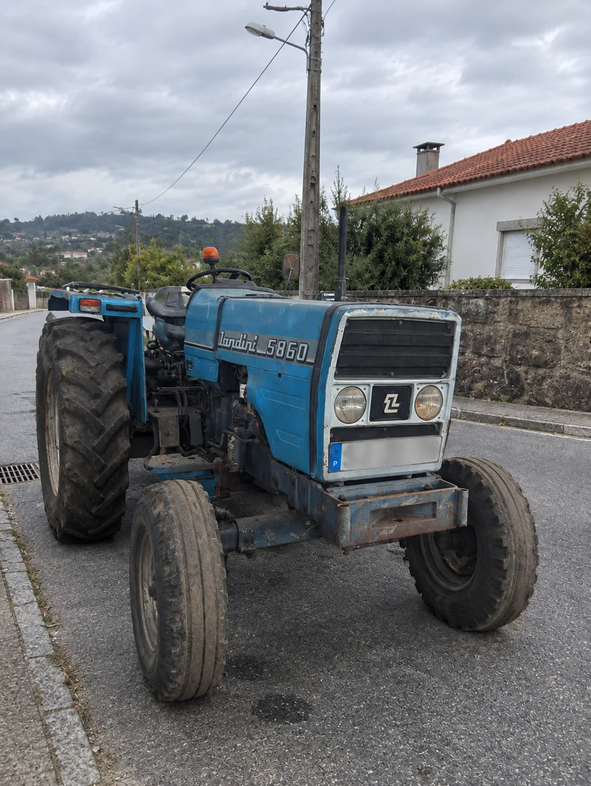

Usado

Foto real do equipamento · peça mais imagens e vídeos
Landini
Disponível
Landini 5860 — Direção Assistida
Vende-se Landini 5860, um trator robusto, económico e muito fiável, ideal para agricultura, vinhas, pomares, quintas e todo o tipo de trabalhos agrícolas. Direção assistida, sem tração dianteira (2WD), com matrícula e documentos, motor fiável e de manutenção simples, estrutura de proteção (arco de segurança). Pronto para trabalhar. Uma excelente escolha para quem procura um trator resistente, confortável de conduzir e com a qualidade reconhecida da Landini.
2WDDireção assistidaMatriculadoGasóleo
Potência50 CV
Tração2WD
Horas—
Ano—
CombustívelGasóleo
Preço anunciado
7.000 € + IVA!
Avaliação gratuitado seu trator
Retoma e trocacom o seu usado
Entrega e apoioao domicílio
Contacte-nos para confirmar disponibilidade, características e restantes condições do equipamento.
Precisa de mais informações sobre este equipamento?
Fale connosco por WhatsApp ou telefone. Enviamos mais fotos, vídeos e todos os detalhes que precisar.